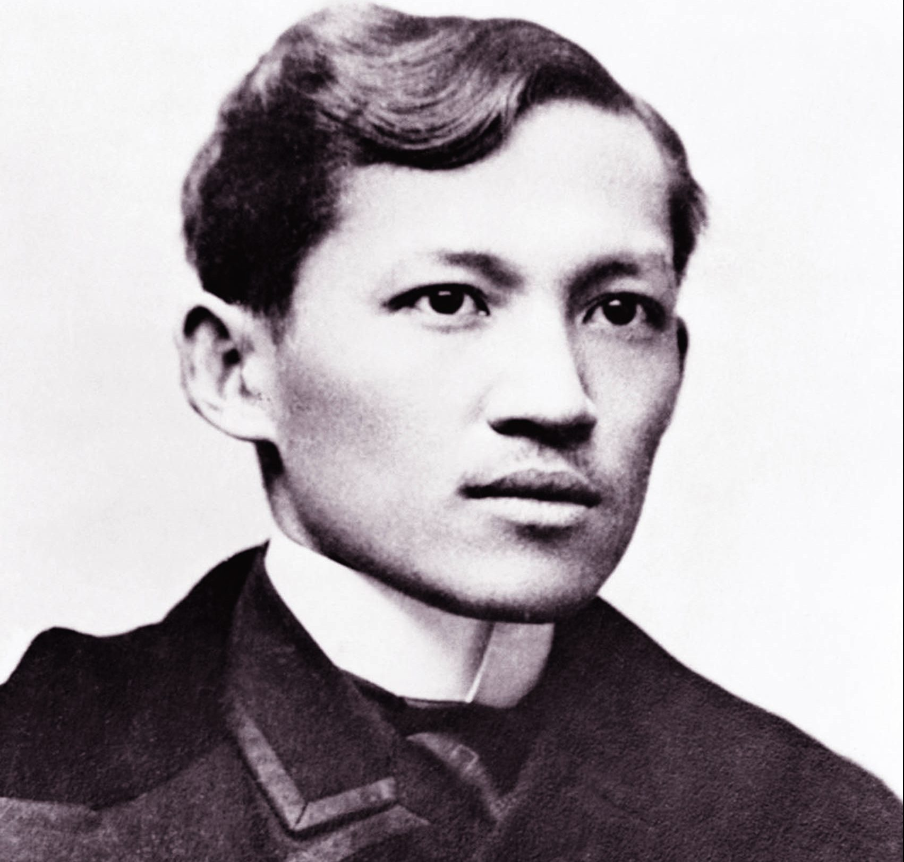

<html> 
    <head>
        <title> ANG MAY-AKDA </title>
        <link rel="stylesheet" href= "grid.css">
    </head>
</html>
 
<style>
    body {
        background-color: #b8936b;
    }
    h2 {
        background-color: #d7bfae;
    }

    p {
        background-color: #d3bfa6;
    }
</style>

<body>
    <h1> Ang May-Akda </h1>
</body>

<div class= "container">
    <div class= "box">
        <h2> Ang May-Akda </h2>
        
        <p>
            Si Dr. Jose Protacio Rizal Mercado y Alonzo Realonda ay isang Pilipinong bayani at isa sa pinakatanyag na tagapagtaguyod 
            ng pagbabago sa Pilipinas noong panahon ng pananakop ng mga Kastila. Siya ang kinikilala bilang pinakamagaling na bayani 
            at itinala bilang isa sa mga pambansang bayani ng Pilipinas ng Lupon ng mga Pambansang Bayani. Ipinanganak si Rizal sa 
            isang mayamang angkan sa Calamba, Laguna at ikapito siya sa labing-isang anak ng mag-asawang Francisco Engracio Rizal 
            Mercado y Alejandro at Teodora Morales Alonzo Realonda y Quintos. Noong 1882, nagpunta si Pepe sa Madrid, upang lalong 
            madagdagan ang kaalamang nakuha mula sa Unibersidad ng Santo Tomas. Dito nakita niya ang iba't-ibang pamumuhay ng mga Espanyol. 
        </p>

        <p>
            Noong nabasa ni Rizal ang nobelang Uncle Tom's Cabin ni Harriet Beecher Stowe kaugnay sa pagmamalupit sa mga aliping 
            itim sa Amerika, naisip niyang kinakailangan na mayroon ding nobelang isulat tungkol sa pagsasamantalang nararanasan 
            ng mga Pilipino sa kamay ng mga prayleng Espanyol. Nagmungkahi siya sa kaniyang mga kaibigang Pilipino sa Madrid noong 
            1884 na magtulungan sila sa pagsulat ng isang nobela tungkol sa mga nagaganap sa Pilipinas. Bagaman umayon ang kaniyang 
            mga kaibigan sa ideya ng pagsulat kaugnay ng buhay sa Pilipinas, tungkol lamang sa kababaihan ang tanging nais nilang 
            isulat at hindi ang kaugnay sa mga suliraning kinahaharap ng bansa. Dahil ganoon ang kaisipan ng kaniyang mga kaibigan 
            na higit na nais ang pagsusugal at makasama ang kababaihan kaysa magsulat, nagdesisyon si Rizal na isulat ang buong 
            aklat nang magisa. Sinimulang isulat ni Rizal ang Noli Me Tangere sa Madrid, Espanya. Bagama't, marami sa bahagi 
            nito ang isinulat sa Paris. Nagboluntaryo naman ang isang kilalang manunulat at aktibistang pulitikal na si Vicente Blasco 
            Ibañez na maging tagapagwasto at kasangguni ng isinulat na nobela ni Rizal.
        </p>

        <p>
            Habang tinatapos niya ang aklat noong Disyembre 1886, wala nang salapi si Rizal at nawawalan na rin siya ng pag-asang 
            mailalathala ang nobela. Binalak niyang sirain ang manuskrito nito dahil sa problemang pinansiyal. Marahil, hindi nailathala 
            ang nobela kung wala ang suporta ng kaniyang mayamang kaibigan na si Maximo Viola, na dinalaw lamang siya noon sa Berlin, 
            Germany. Nang mabasa ang nobela, naniwala si Viola sa kahalagahan ng nobela at sa layunin nito kaya nagkaloob siya ng tatlong 
            daang piso na nakasapat sa paunang pagpapalathala ng aklat na may kabuuang 2000 kopya. Bilang kapalit sa kagandahang loob ng 
            kaibigan, ipinadala sa kaniya ni Rizal ang galley proof at ang unang nailathalang kopya ng Noli Me Tangere noong Marso 21, 1887.
        </p>
</div>